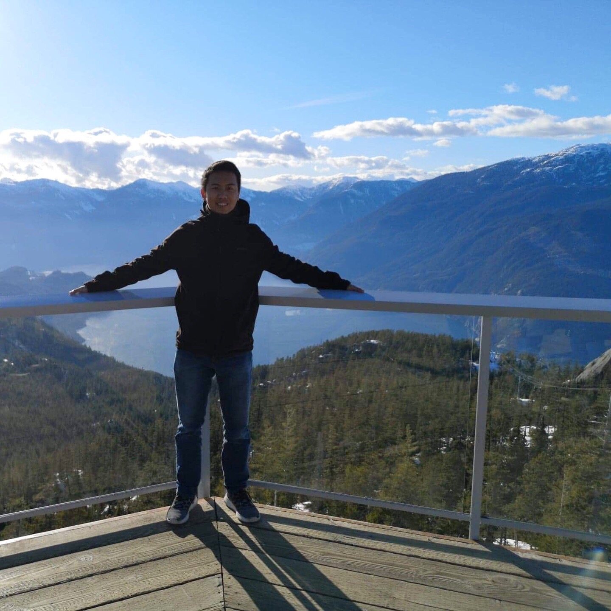

Nicolas Asis, born in Toronto, living in Vancouver

About ME
I am a hardworking and motivated student working towards a diploma in Digital Design and Development. Even when I graduate the program, I am willing to learn new things and am always researching topics I am interested in. I was born and raised in Toronto, but moved to Vancouver the summer after I graduated high school.
I love food and travelling. I feel travelling is very important because it makes you aware of the different cultures in the world and opens your eyes as to how beautiful the world really is. On my free time, I enjoy hanging out with friends, going on hikes, and playing basketball.